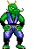
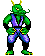
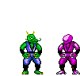

The Ninja Dragon has come back at last!!!

Studying the deepest Arts of the Dragon Clan, Ryu has found a way to summon the true power of the Dragon itself to rid the world of darkness. This ancient Art has burned the unworthy, yet in Ryu it can save the world. With the power of the ancient beast of his clan, Ryu will become the true Ninja Dragon--the one prophecized to destroy the Demons of Darkness forever.
This is the new concept: the Art of Transformation. To use it, you must obtain an Orb of the Dragon. When you have it, you can become the Ninja Dragon, but for a limited time. How long you stay in that form depends on whether you transform back on your own, or on how many Spirits you have. When you obtain two Ghost Clones, you can hold the transformation as long as you want.
However, becoming the Ninja Dragon brings with it a marvelous array of powerful attacks. All anims are mouse-overs.
However, becoming the Ninja Dragon brings with it a marvelous array of powerful attacks. All anims are mouse-overs.
BASIC MOVES

...the home of the Angel...

Run
FIGHTING MOVES

Punches
POWERS

Flame Streak

Sacri-Flame
((Self Explanatory))
*Ninja Gaiden, Ninja Gaiden 2: Dark Sword of Chaos, and Ninja Gaiden 3: Ancient Ship of Doom, are trademark and copyright property of Tecmo Inc. Display of the images on this site are for ENTERTAINMENT PURPOSES ONLY!
I, the Guardian, am not for profit in the creation of this website and make absolutely no money for it. I do not work for Tecmo Inc., nor am I affiliated with Microsoft or Nintendo. I am simply an enthusiast of the Ninja Gaiden Series.
I, the Guardian, am not for profit in the creation of this website and make absolutely no money for it. I do not work for Tecmo Inc., nor am I affiliated with Microsoft or Nintendo. I am simply an enthusiast of the Ninja Gaiden Series.